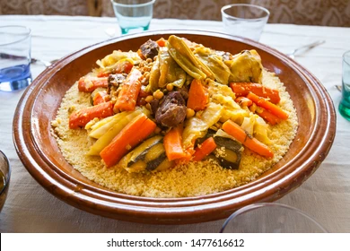
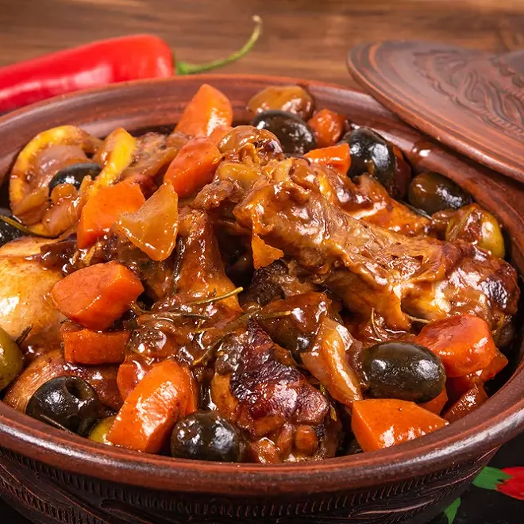
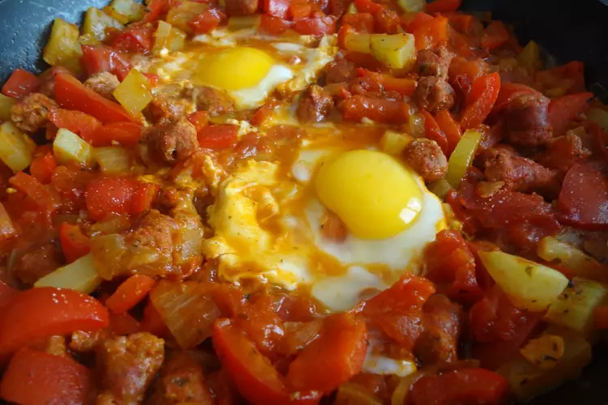

About Algerian Cuisine
Algerian cuisine is a delightful fusion of flavors influenced by Berber, Arab, French, and Mediterranean cuisines.
It features a rich variety of dishes and ingredients, each offering a unique taste of Algeria's culinary heritage.
Popular Algerian Dishes
- Couscous: A staple dish made from steamed semolina wheat, often served with stewed vegetables and meat.
- Tajine: A flavorful stew cooked in a special clay pot with various combinations of meat, vegetables, and spices.
- Merguez: Spicy lamb or beef sausages often grilled and served with bread or as part of a tagine.
- Brik: A popular street food, these deep-fried pastry parcels are filled with egg, tuna, capers, and spices.
Sample Images


